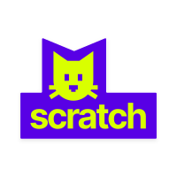
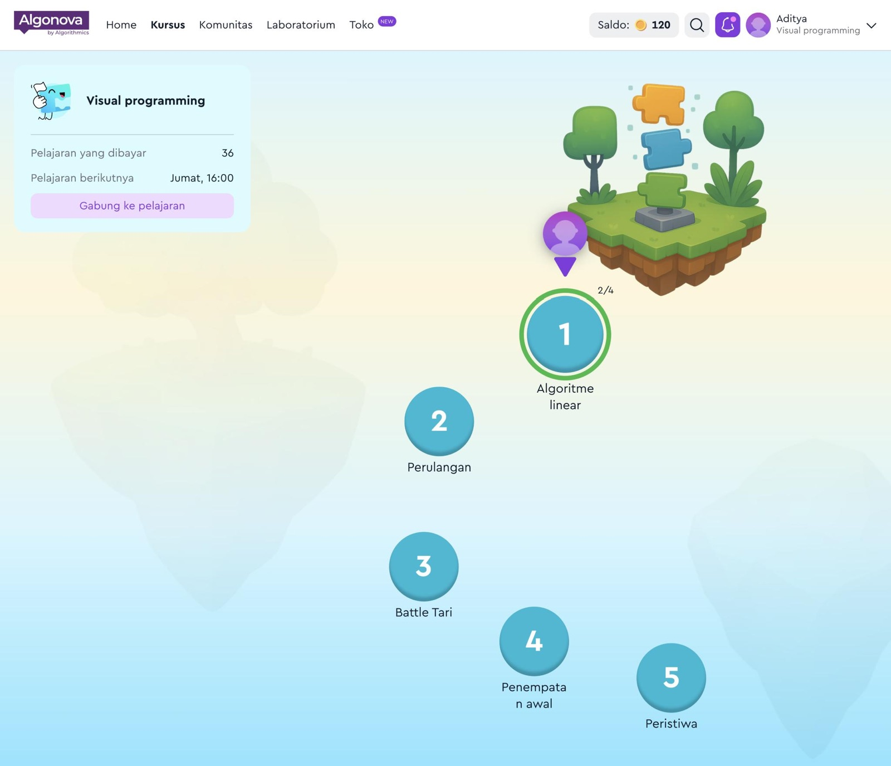
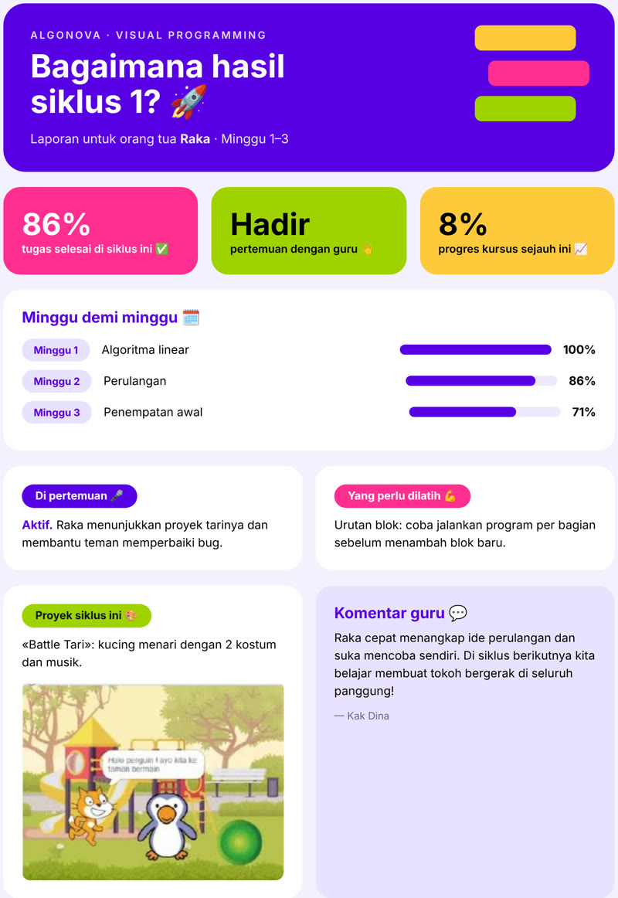

36 pelajaran, satu per minggu
Setiap pelajaran terdiri dari 3–5 bagian singkat, masing-masing 15–20 menit: video, kuis, simulator, dan tugas Scratch.
Lihat isi pelajaranAnak belajar di rumah dengan pelajaran singkat setiap minggu (video, kuis, simulator, dan tugas). Setiap 3 minggu ada pertemuan live bersama tutor dalam grup berisi 4 anak. 36 topik yang sama, sertifikat yang sama.

Format fleksibel vs format regulerKevin adalah guru Pemrograman Visual di Algonova dan merekam video pelajarannya.
Setiap pelajaran terdiri dari 3–5 bagian singkat, masing-masing 15–20 menit: video, kuis, simulator, dan tugas Scratch.
Lihat isi pelajaran90 menit dalam grup kecil premium berisi 4 siswa, setiap 3 minggu.
Lihat semua 12 pertemuanTeka-teki interaktif tempat anak mencoba ide sebelum menuliskannya dalam kode. Kursus reguler tidak memilikinya.
Lihat simulatornyaDi Discord, pukul 15:00–20:00 WIB. Moderator menjawab lebih dulu, tutor membantu pertanyaan yang lebih sulit.
Lihat contohPesan WhatsApp singkat setiap minggu dan laporan PDF setiap 3 minggu.
Lihat contoh36 topik yang sama dengan kursus reguler. Sertifikat diberikan di akhir kursus.
36 pelajaran + 12 pertemuan live selama 36 minggu
Anak berkenalan dengan tutor dan grup, lalu mengerjakan tugas orientasi pertama di platform belajar.
3–5 bagian singkat 15–20 menit: video, kuis, simulator, tugas Scratch. Pertanyaan diajukan di Discord.
Lihat isi pelajaran90 menit bersama tutor dalam grup 4 anak: tunjukkan proyek, perbaiki bug, tantangan grup.
Lihat semua 12 pertemuanSetiap minggu: apa yang sudah dikerjakan anak dan apa selanjutnya. Setiap 3 minggu: laporan PDF berisi proyek dan komentar tutor.
Lihat contohLangkah 1–3 diulang 12 kali selama kursus
Satu pelajaran per minggu: 3–5 bagian singkat 15–20 menit berisi video, kuis, simulator, dan tugas Scratch. Pertanyaan diajukan ke tutor dan tim komunitas di Discord.
Guru menjelaskan topik.
Cek singkat apakah materi sudah dipahami.
Coba idenya dalam teka-teki interaktif.
Wujudkan dengan blok kode sungguhan.

Anak memecahkan teka-teki langkah demi langkah dan langsung melihat hasilnya. Kursus reguler tidak memiliki simulator.
Moderator menjawab lebih dulu, pukul 15:00–20:00 WIB. Kalau tugasnya sulit, tutor ikut membantu dan menjelaskan.
Pesan singkat: apa yang sudah dikerjakan anak dan apa selanjutnya.
Laporan siklus berisi proyek dan komentar tutor.

| Fitur | Format regulerReguler | Format fleksibelFleksibel |
|---|---|---|
| Harga per pelajaranHarga | Harga regulerReguler | 3× lebih murah3× lebih murah |
| TeoriTeori | Dijelaskan hanya di kelas liveHanya di kelas live | Video di setiap pelajaran, bisa ditonton ulang kapan sajaVideo, bisa diulang |
| SimulatorSimulator | Tidak ada simulator— | Baru: teka-teki interaktif di setiap pelajaranDi setiap pelajaran |
| Bantuan di antara kelasBantuan harian | Tidak ada bantuan harianTidak ada chat harian | Chat Discord setiap hari, 15:00–20:00 WIBSetiap hari, 15:00–20:00 |
| Laporan untuk orang tuaLaporan | Sebulan sekaliBulanan | Setiap minggu + laporan PDF setiap 3 mingguMingguan + PDF |
| Kelas terlewatKelas terlewat | Kelas pengganti atau hangusDiganti atau hangus | Terekam, selalu tersediaTerekam |
| Ritme belajarRitme belajar | Jadwal mingguan tetapJadwal tetap | Sesuai ritme anakRitme anak |
| 36 topik dan sertifikatTopik & sertifikat | YaYa | SamaSama |
| Kelas live bersama tutorKelas live | Setiap mingguSetiap minggu | Setiap 3 mingguSetiap 3 minggu |
Paling cocok untuk keluarga yang sibuk, anak yang suka belajar sesuai ritmenya sendiri, dan orang tua yang ingin melihat perkembangan setiap minggu.
Lihat program Pemrograman Visual: topik, modul, dan proyek yang dibuat anak.
Hubungi kami di WhatsApp — pesan “Saya tertarik. Saya ingin membeli format Fleksibel.” sudah siap dikirim, dan kami akan membantu anak Anda mulai belajar.